目录
Zuna Facecap 用手机摄像头读取你的表情和头部动作，通过 Wi-Fi 发送到支持 iFacialMocap 的电脑软件。iFacialMocap 是这些软件用于 iPhone 面部追踪的协议。不需要 iPhone。
想用同一台手机驱动手臂、手指，还要直播控制台？ 请看 用 Zuna Studio 做得更多，申请即可使用。
简单流程： 安装应用 → 允许摄像头 → 用支架把手机立在离脸约 40 cm 处 → 在电脑软件中选择 iFacialMocap 追踪，输入应用中显示的手机地址 → 开始追踪 → 校准一次。
| 支持的软件 | Warudo、VSeeFace、VNyan 以及其他可接收 iFacialMocap／iPhone 追踪的软件。也支持通过 VMC 协议接收的软件（进阶）。 |
| 发送内容 | ARKit 格式的 51 个表情数值＋头部旋转和位置，UDP 端口 49983 |
| 隐私 | 视频只在手机上分析，不会录制或上传。只通过你自己的 Wi-Fi 把追踪数值发送到电脑。 |
| 语言 | English、한국어、日本語、简体中文（设置 → 语言） |
| 联系 | maxjang123@gmail.com · 设置 → 帮助与联系 |
1. 设备要求
| 最低 | 推荐 | |
|---|---|---|
| Android | Android 10 及以上 | Android 13 及以上 |
| 处理器 | 64 位（ARM64）。仅支持 32 位的手机无法安装。 | 2021 年前后及之后上市的中端及以上芯片 |
| 内存 | 4 GB | 6 GB 及以上 |
| 摄像头 | 前置或后置 | 前置；如需追踪上半身，可用后置广角（超广角） |
| 网络 | 手机和电脑连接同一个 Wi-Fi／路由器 | 5 GHz Wi-Fi，电脑用有线或 5 GHz |
| 其他 | — | 手机支架或三脚架，长时间直播时准备充电器 |
在 Galaxy S24 Ultra（Android 16） 上开发和测试：60 fps 摄像头设置下，面部追踪约 40 fps。更老或入门级手机也能用，但追踪帧率较低。如果感觉慢，请关闭 上半身、手 和 60 fps 追踪。
在应用的 设置 → 帮助与联系 → 设备要求 中可以查看本机的 Android 版本和内存，内存较小时会提示。
为什么只支持 64 位？
面部、身体和手部模型基于 Google MediaPipe 运行。如果为老旧 32 位手机加入库文件，应用体积会翻倍以上，而且这类手机本身也难以流畅追踪。
2. 安装
- 安装 Zuna Facecap（Google Play，或你收到的 APK）。
- 打开应用，入门指南会自动开始。
直接安装 APK 时，Android 可能会要求允许浏览器或文件管理器安装应用。这是一次性的系统设置。
3. 首次启动
首次打开会显示 5 步指南。可以 跳过，之后随时可在 设置 → 帮助与联系 → 再次查看入门指南 中重新打开。
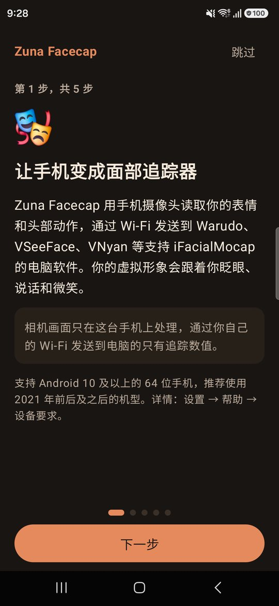
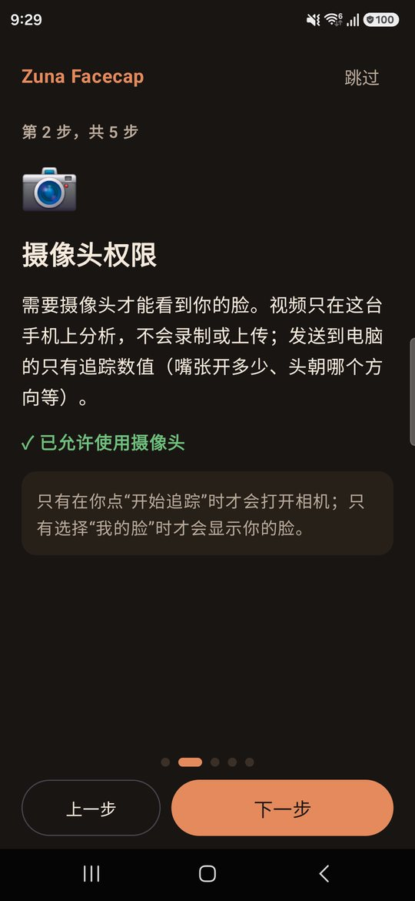
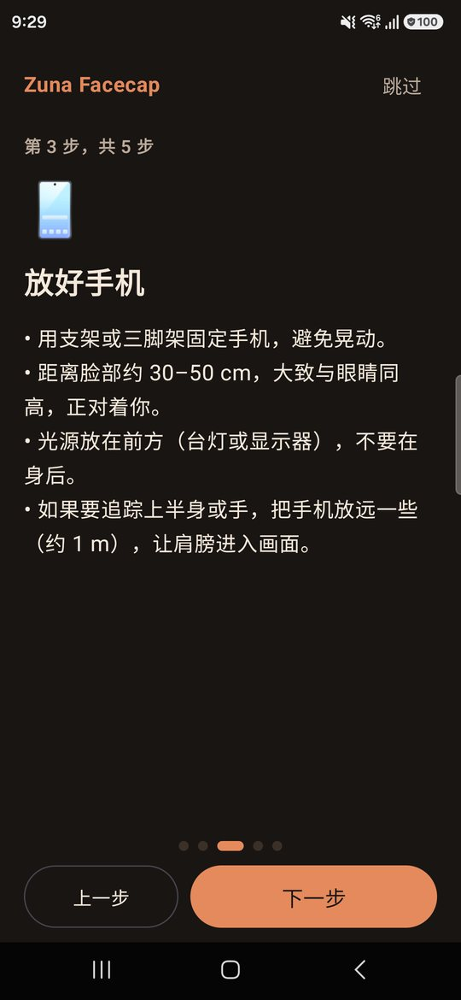
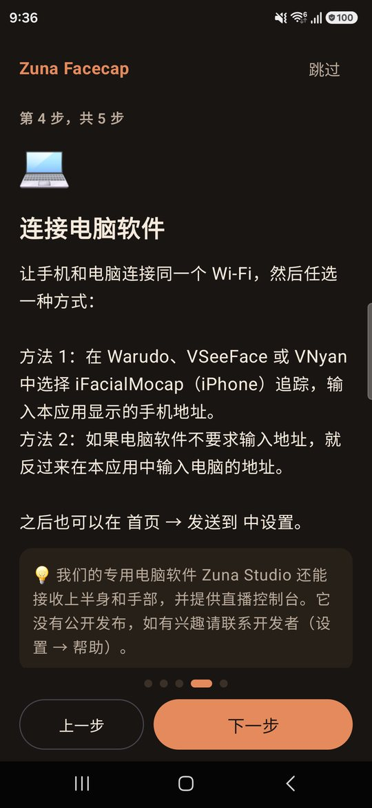
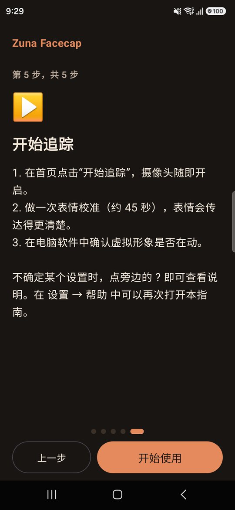
放好手机
- 用 支架或三脚架 固定手机，避免晃动。
- 距离脸部 30–50 cm，大致与眼睛同高，正对着你。
- 光源放在 前方（台灯或显示器），不要在身后。
- 如果要追踪 上半身或手，把手机放到约 1 m 外，让肩膀进入画面。
只有点击 开始追踪 时摄像头才会开启。首页会显示一个模仿你表情的角色；选择右上角的 我的脸 可以看到带追踪点的摄像头画面。

4. 连接 Warudo、VSeeFace、VNyan
让手机和电脑连接 同一个 Wi-Fi。在首页点击 发送到，确认已选择 电脑应用（iFacialMocap）（默认）。
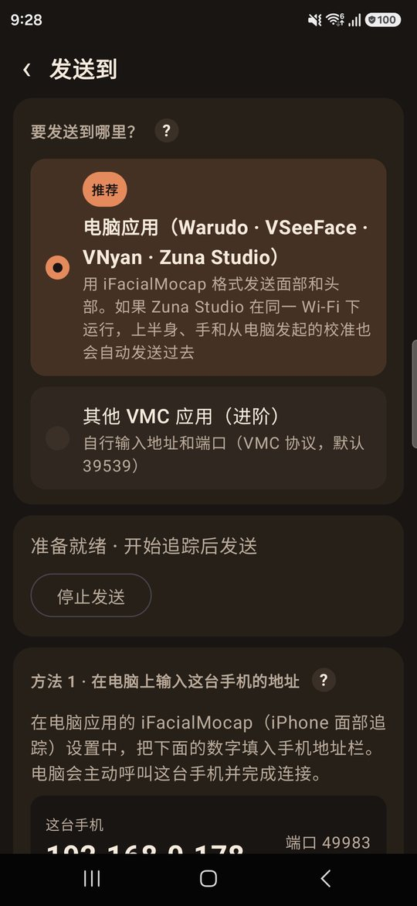
有两种连接方式，任选其一 即可。
| 方法 1 · 在电脑上输入手机地址 | 方法 2 · 在手机上输入电脑地址 | |
|---|---|---|
| 适用情况 | 电脑软件会要求输入手机的 IP 地址（VSeeFace、VNyan、Warudo） | 电脑软件只等待接收，不要求输入地址 |
| 在哪里输入 | 电脑软件中 | Zuna Facecap → 发送到 → 电脑地址 |
| 输入什么 | 这台手机 下方的大号数字，例如 192.168.0.178 | 电脑的 IPv4 地址，例如 192.168.0.217 |
| 端口 | 49983（固定） | 49983（固定） |

带 ? 的项目点一下会显示简短说明。不确定某个设置时可以点开看看。
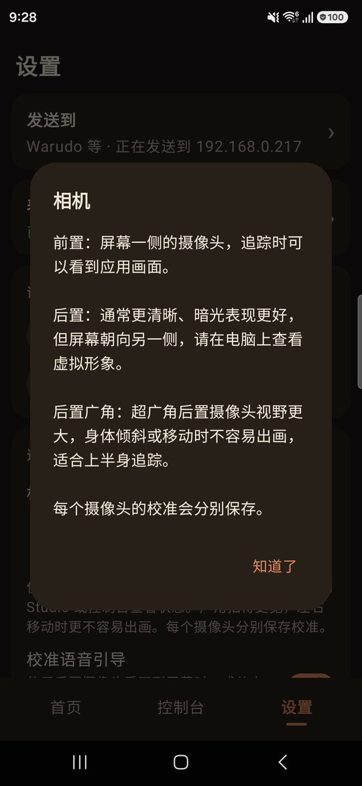
Warudo
- 在 Warudo 中打开角色的 Setup，面部追踪选择 iFacialMocap（iPhone / iFacialMocap）。
- 输入 Zuna Facecap 中显示的手机地址（方法 1）。如果 Warudo 不要求输入地址，就用 方法 2，在应用中输入电脑地址。
- 在手机上点击 开始追踪。
VSeeFace
- 在 General settings → iPhone/ARKit face tracking 中开启 iFacialMocap（Receive tracking data from iFacialMocap）。
- 把 Zuna Facecap 中的手机地址填入 IP 栏并连接。
- 在手机上点击 开始追踪。如果只用手机追踪，请把 VSeeFace 的摄像头设为 None。
VNyan
- 在 Settings → Tracking → ARKit / iPhone tracking 中选择 iFacialMocap。
- 输入 Zuna Facecap 中的手机地址并开始接收。
- 在手机上点击 开始追踪。
菜单名称会因软件版本和语言而不同。找到“iFacialMocap”或“iPhone tracking”即可，步骤相同。
如何查看电脑地址（方法 2）？
- 按 Win + R，输入
cmd并按 回车。 - 输入
ipconfig并按 回车。 - 在正在使用的网卡（Wi-Fi 或以太网）下找到 IPv4 地址，例如
192.168.0.217。
这是家庭网络中的地址，不是公网地址。
其他 VMC 应用（进阶）
有些软件不是用 iFacialMocap，而是通过 VMC 协议 接收。在 发送到 中选择 其他 VMC 应用，输入接收端电脑的地址和端口（通常为 39539）。如果软件使用 EyeBlinkLeft 这样的 Perfect Sync 名称，请开启 首字母大写的名称。这种方式只发送面部和头部。
5. 校准
每个人的放松表情都不同，追踪器在放松时很少正好是 0，表情最大时也很少正好是 100。表情校准 会测量你的放松表情以及每种表情的幅度，让你闭嘴时形象也闭嘴，笑时笑得到位。
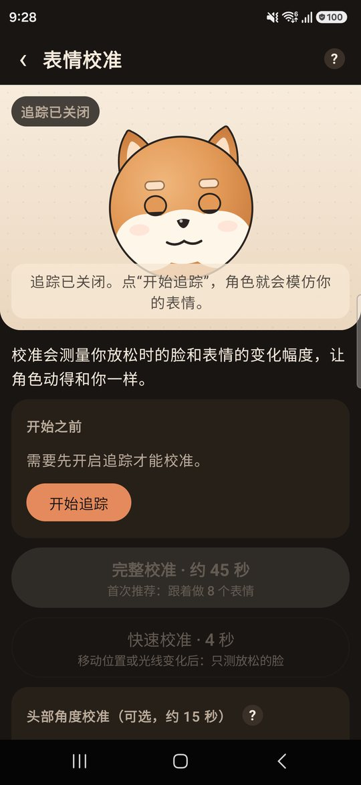
| 所需时间 | 什么时候做 | |
|---|---|---|
| 完整校准 | 约 45 秒，8 种表情 | 第一次做一次 |
| 快速校准 | 4 秒，只测放松表情 | 移动手机或光线变化后 |
| 头部角度校准（可选） | 约 15 秒 | 手机在脸部下方或上方时 |
| 身体姿势（可选） | 4 秒 | 开启上半身、且手机放在侧面时 |
校准按 摄像头分别 保存，并备份到 Download/ZunaFacecap/zuna-facecap-calibration.json。重新安装或换手机时，用 读取校准 即可，无需重新校准。
6. 设置说明
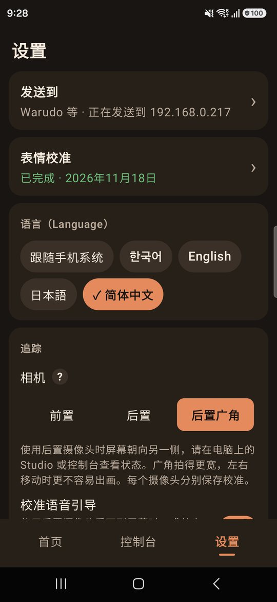
| 设置 | 作用 | 提示 |
|---|---|---|
| 相机：前置／后置／后置广角 | 用哪个摄像头追踪 | 前置可以边看应用边用。后置通常更清晰。后置广角（超广角）身体倾斜时也不容易出画 |
| 校准语音引导 | 朗读校准步骤 | 用后置摄像头、看不到屏幕时 |
| 上半身 | 追踪肩膀和手臂 | 仅限 Zuna Studio。把手机放到约 1 m 外 |
| 手 | 追踪手指 | 仅限 Zuna Studio。帧率会略降 |
| 60 fps 追踪 | 更快的摄像头 | 更流畅，但发热和耗电更多 |
| 打开应用时开始追踪 | 不用再点开始 | 默认关闭 |
| 熄屏时继续追踪 | 熄屏后在后台继续追踪 | 运行期间会显示通知，请边充电边用 |
| 眨单眼修正 | 让眨单眼保持为眨单眼 | 默认开启 |
| 防止跳动 | 过滤头部或面部某一帧不可能的跳动 | 真正的快速动作会晚一帧（约 0.02 秒）传出 |
| 左右反转 | 交换左右 | 只在电脑软件中左右显示相反时使用 |
| 录制 | 把表情数值保存为 JSON（不含视频） | 用于测试 |
| 诊断 | fps、延迟、运行于（处理器）、电池、发热 | 感觉慢时先看这里 |
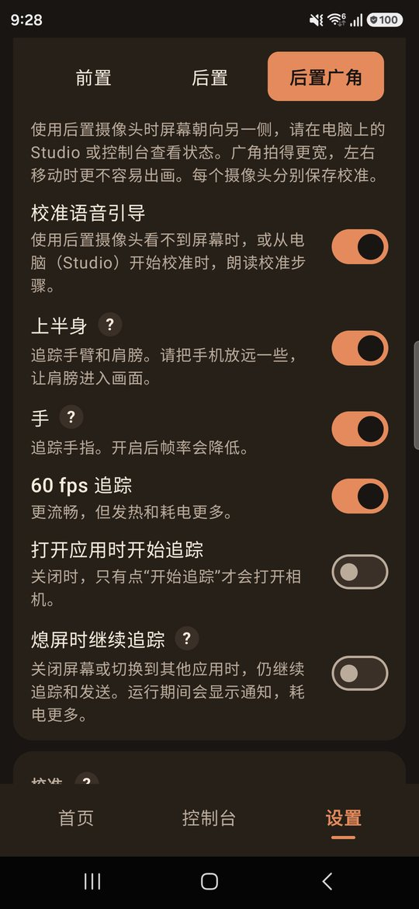
7. 用 Zuna Studio 做得更多
Zuna Studio 是专为 Zuna Facecap 打造的 Windows 配套软件。Warudo、VSeeFace、VNyan 的面部追踪不需要它。有了 Studio，同一台手机 可以驱动虚拟形象的更多部位，还能用手机掌控整场直播。
感兴趣吗？ Zuna Studio 按申请提供。咨询 Zuna Studio，我们会通过邮件回复。
为什么选择 Zuna Studio？
一台手机能传到电脑的内容：
| 手机 → Warudo / VSeeFace / VNyan | 手机 → Zuna Studio | |
|---|---|---|
| 面部和头部 | ✓ | ✓ |
| 肩膀和手臂 | —（需要另一个追踪设备） | ✓ 同一台手机 |
| 手指 | —（需要另一个追踪设备） | ✓ 同一台手机 |
| 从电脑发起校准＋手机语音引导 | — | ✓ |
| 手机或平板上的直播控制台 | — | ✓ |
| 只有你的手机能驱动形象（注册本机） | — | ✓ |
Studio 带来的功能
| 追踪 | 虚拟形象 |
|---|---|
|
|
| 直播 | 安心 |
|
|
 手机上的控制台（控制台标签页） |
|
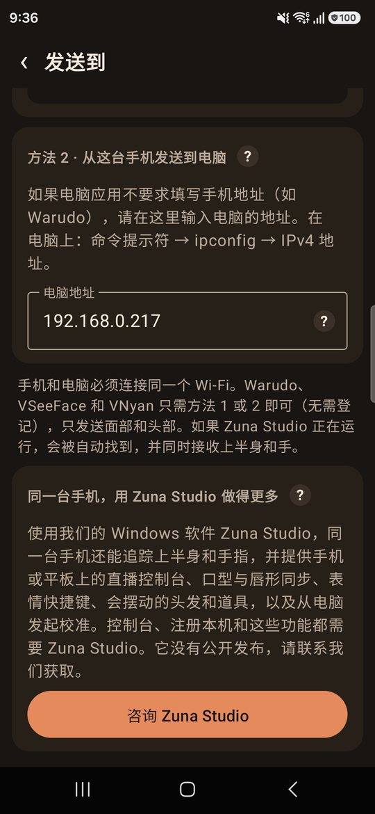 应用内：Studio 带来的功能和咨询按钮 |
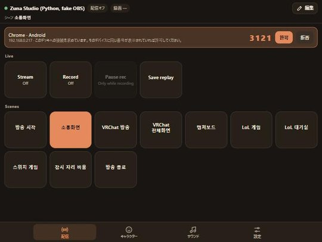 首次需在电脑上允许手机（4 位数字，图为日文界面） |
适合这些人
- 不想再买追踪设备，也想让 手臂和手 动起来的 VTuber
- 想用身边的 手机控制 OBS 和音乐 的主播
- 寻找 定制方案 或合作的创作者和团队
如何获取 Zuna Studio
Zuna Studio 没有公开发布。联系我们后会通过邮件回复。
- 在应用中：设置 → 帮助与联系 → 商务咨询，或点 咨询 Zuna Studio 按钮（发送到页面、控制台标签页、设置）。会打开带简短模板的邮件应用。
- 或发送邮件：maxjang123@gmail.com
我们会为你打造 专属于你的虚拟形象的 Zuna Studio：把你的模型配置进 Studio（与追踪对应的表情、上半身和手指、镜头预设、控制台），以你专属的 Windows 应用交付。这是仅为你制作的版本，不会提供给其他人。
需要你提供的内容
| 需要什么 | 原因 | |
|---|---|---|
| 1. 虚拟形象文件 | 以下任意一种：VRChat 形象 的 Unity 工程或 .unitypackage（带材质和贴图的 Humanoid 预制体）· 带贴图的 FBX（Humanoid 骨骼）· VRM 文件（0.x 或 1.0） | 形象会内置到应用中。Studio 通过 Humanoid 骨骼和形态键驱动 |
| 2. 形态键 | 模型中有哪些表情形态键：ARKit／Perfect Sync（最佳）、VRChat 口型（vrc.v_aa…）、VRM 或 MMD 表情，或者没有 | 会自动匹配。没有的话用眨眼、元音和下巴骨骼驱动 |
| 3. 着色器 | 使用的着色器及版本（例如 lilToon 2.x、Poiyomi） | Studio 运行在 Unity 6（URP）上。部分着色器需要兼容的版本才能保持相同外观 |
| 4. 授权 | 模型的使用条款或销售页面（例如 BOOTH），以及是否允许直播使用和修改 | 模型会放进应用中。我们只在授权允许的范围内制作 |
| 5. 其他（可选） | 表情和手势动画、服装切换和道具、物理骨骼（PhysBone 等） | 用于表情快捷键、服装道具和摆动的头发。物理效果会尽量迁移 |
| 6. 使用环境 | 手机型号和 Android 版本 · Windows 10/11（64 位）、支持 DirectX 12 的显卡 · OBS Studio 和 Spout2 插件 | Studio 通过 Spout2 向 OBS 发送透明背景画面 |
| 7. 直播配置（可选） | OBS 场景名称、背景图片、按情境播放的背景音乐、喜欢的镜头构图 | 让控制台和舞台从第一天就能用 |
请用下载链接发送文件（Google Drive、Dropbox 等），不要用邮件附件。请勿发送密码。
为什么不能直接把我的形象导入现成的应用？
FBX 和 VRChat 形象需要由 Unity 编辑器转换（材质、着色器、Humanoid 设置），做好的 Windows 应用本身做不到。所以我们会在 Unity 中准备好你的形象，再和 Studio 一起构建。可直接读取 VRM 文件的版本正在计划中，但目前还没有。
控制台如何连接
- 在电脑上启动 Zuna Deck 或 Zuna Studio。
- 让手机和电脑连接同一个 Wi-Fi。
- 如果 Windows 防火墙询问，请允许 专用网络。
- 首次连接时电脑会显示 4 位数字，与手机上的一致就在电脑上允许。
平板或另一台手机也可以用浏览器打开同一个控制台。
8. 故障排除
先检查：首页的 追踪中 是否为绿色，发送到 是否显示 正在发送。
虚拟形象完全不动
- 手机和电脑是否在 同一个 Wi-Fi？访客网络和部分 Mesh 路由器会阻止设备互相访问。
- 是否在手机上点了 开始追踪？
- 方法 1： 电脑软件中输入的数字是否与 这台手机 下的数字完全一致？手机重新连接 Wi-Fi 后可能会变。
- 方法 2： 电脑地址是否正确？（
ipconfig→ IPv4） - Windows 防火墙： 电脑软件需要在 专用网络 中被允许。也请确认 Windows 把当前 Wi-Fi 设为 专用 网络。
- 手机或电脑是否开着 VPN？关闭后再试。
- Android 17： 应用询问时请允许 附近的设备（设置 → 应用 → Zuna Facecap → 权限）。
显示“未检测到脸”或经常丢失面部
- 把前方的光线调亮。房间太暗是最常见的原因。
- 让手机在 30–50 cm 处正对着脸。
- 换一个摄像头试试（设置 → 相机）。
嘴巴一直微张，或表情不明显
请做一次 完整校准。移动过手机或光线变化后，做 快速校准。如果手机在脸部下方，也试试 头部角度校准。
左右反了
开启 设置 → 表情细节 → 左右反转。通常 Left 指你自己的左边。
追踪很慢或手机发烫
- 关闭 上半身、手 和 60 fps 追踪。
- 取下厚手机壳，避免阳光直射。
- 在 设置 → 诊断 中查看 运行于（通常 GPU 更快）和 发热。
切换到其他应用或熄屏后追踪停止
开启 设置 → 熄屏时继续追踪。如果手机会结束后台应用，请把 Zuna Facecap 从电池优化中排除。
9. 常见问题
需要 iPhone 或 iFacialMocap 应用吗？
不需要。Zuna Facecap 在安卓上用相同的协议发送，电脑软件会把它识别为 iFacialMocap。
摄像头视频会被发送到别处吗？
不会。视频只在手机上分析，不会录制或上传。只发送追踪数值，而且只发送到你连接的电脑。
需要联网吗？
不需要。追踪只在家庭 Wi-Fi 内传输。联网只用于检查应用更新。
在 Warudo、VSeeFace、VNyan 中身体和手也会动吗？
这些软件通过 iFacialMocap 接收 面部和头部。如果想用同一台手机追踪上半身和手指，请使用 Zuna Studio。
可以用后置摄像头吗？
可以。设置 → 相机 → 后置 或 后置广角。请开启语音引导，这样看不到屏幕也能校准。
一定要用 Zuna Studio 吗？
Warudo、VSeeFace、VNyan 不需要。Studio 能让同一台手机做得更多：上半身和手指、直播控制台、口型与唇形同步、道具，以及从电脑发起校准。申请即可使用：如何获取 Zuna Studio。
10. 报告问题与联系
设置 → 帮助与联系 中有两个按钮：
| 按钮 | 打开 | 自动填写的内容 |
|---|---|---|
| 报告问题 | 邮件应用 | 标题含应用版本和手机型号；正文含设备、Android 版本、应用版本（versionCode）和语言。只需写下发生了什么。 |
| 商务咨询 | 邮件应用 | 用于 Zuna Studio 使用、合作、联名的标题和简短模板 |
如果没有邮件应用，会显示邮箱地址和 复制地址 按钮。
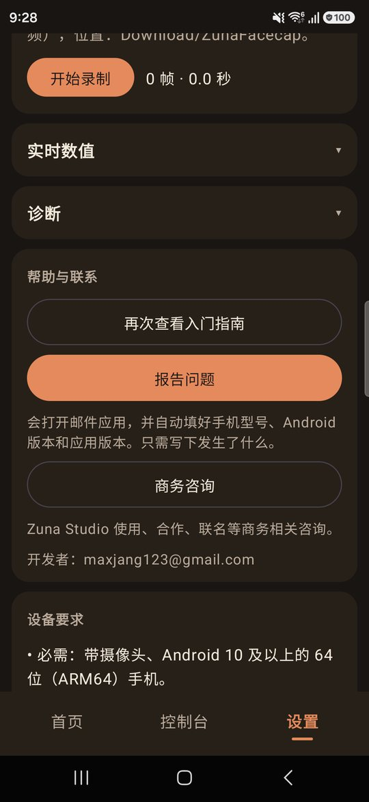
maxjang123@gmail.com